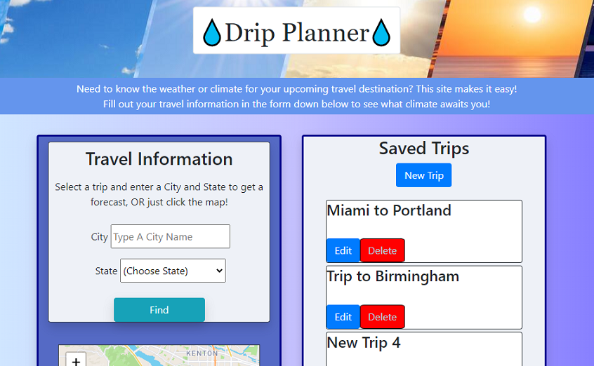

About Me
Currently enrolled in the Vanderbilt Full-Stack Coding Bootcamp, I am an aspiring web developer. At the ripe young age of 25, I've had experience in various job markets including the industries of music, education, trucking, and supply chain.
I also have various hobbies including:
- Music: I play primarily French horn, dabble in piano/voice, and compose here and there on the side
- Video games: A player and developer, I have participated in three game jams with a group of like-minded individuals with our sights on future jams
- Running: I ran a half-marathon in November 2020. I have a dream of one day running a marathon, but I can't seem to stay un-injured!
Skills
From the Vanderbilt Coding Bootcamp in particular, I have experience with the following:
- HTML
- CSS
- JavaScript
- jQuery
- Bootstrap
- Use of Web- and Server-Sider APIs
My Work
Drip Planner
Completed and submitted as my first group project for the Vanderbilt Coding Bootcamp, Drip Planner is a weather application that doubles as a travel application. Made for truck drivers, Drip Planner can grab specific forecasts from the National Weather Service (NWS) API, which the user can then organize into a custom trip.
Technologies Used:
- HTML, CSS, and JavaScript
- Bootstrap and jQuery
- Leaflet, a JavaScript library and API used for interactive maps
- The Official National Weather Service (NWS) API
- OpenWeatherMap's Geocoding API
How To Use:
After creating a trip, the user can input a city/state or click the interactive map to generate a forecast for that area. The user can then view additional details of each forecast time-slot and/or add one to the selected trip. When the "Save" button is clicked, the trip will save to the device's local storage and return to the list of user-created trips.
Coding Quiz
Completed for the Vanderbilt Coding Bootcamp, my aptly-named Coding Quiz is a simple-yet-effective basic coding exercise. Once started, a timer will start in the top-right corner. As the user clicks on the provided answer choices for each question, they will see whether they got it wrong or right.
When the quiz has finished either via user completion or time depletion, the user can input his/her score to be uploaded to the high scores. The high scores are stored in the device's local storage, and are ranked from highest-to-lowest with only the top 10 displayed.
Up2Bar
Up2Bar is a team project created in collaboration with John Maclellan and Josh Lyons. It is a prototype social media application on which users can post & read information about events, bars, and other local happenings.
The application is full-stack, meaning we developed both the front-end and back-end from scratch, and it is deployed with Heroku.
When looking at the home screen, users can see both a list of posts and an interactive map containing clickable icons that represent and link to each post. When making a post, the user can provide the post's location by entering an address (which is then sent to MapQuest's Geocoding API), clicking somewhere on a new pop-up map, or by using the user's location.
Technologies used:
- HTML, CSS, and JavaScript
- Node.js
- Express.js
- Handlebars
- SQL and Sequelize
- Leaflet and OpenStreetMaps
- MapQuest's Forward Geocoding API
Contact Me
Email: waingram96@gmail.com
Phone: +1 (901) 573-6120